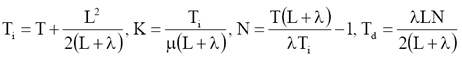

| AutotunerPID Toolkit | |
Synthesis methods
Once that a model (or some characteristic) of the plant have been identified, the second step is to tune the parameters of the PID regulator in order to achieve the best performances. In the following a brief overview of the synthesis methods implemented in the Toolkit is given.
Ziegler & Nichols with Step Identification [ZN(OL)]
Ziegler & Nichols with Relay Identification [ZN(CL)]
Ziegler & Nichols with Step Identification [ZN(OL)]
The first Ziegler and Nichols method tunes the parameter of the PID according to the following table, on the basis of the parameters identified for a FOPDT model
| K | Ti | Td | |
|---|---|---|---|
| P | T/mL | 0 | 0 |
| PI | 0.9T/mL | 3L | 0 |
| PID | 1.2T/mL | 2L | 0.5L |
In the original version of method, the tuning formulas are given with respect to some characteristic of the process identified in terms of the points where the tangent to the step response in the point of maximum slope intersect the step response. However here the modified version has been used since it is more robust with respect to noise.
Kappa-Tau [KT]
The Kappa-Tau method computes the parameters of the 2-d.o.f. ISA PID control law apart from N and in the output derivation case (i.e. c=0). It requires to identify a FOPDT model if the process is not integrating, or a FOPDT one plus a factor 1/s if it is (not yet considered in the Toolkit).
The information used is then given by the model parameters m, T and L, and by the request of a PI or PID regulator. A further specification is the required magnitude margin Ms, defined as
for which the two values of 1.4 (conservative tuning) or 2.0 (more aggressive tuning) are advised. Defining the process normalized gain alpha and normalized delay tau as
the PI(D) regulator parameters are computed as
The coefficients Ai, Bi, Ci, Di come from the following table. These coefficients were derived by applying dominant pole design to many different processes and then interpolating the results to obtain compact tuning relationships. Thus, this is a model following method with the peculiarity of using interpolation. One important remark is that the normalized delay, sometimes called the "controllability index", can be taken as a measure of how difficult to control a process is.
| Structure | PI | PI | PID | PID |
|---|---|---|---|---|
| Ms | 1.4 | 2.0 | 1.4 | 2.0 |
| A0 | 0.29 | 0.78 | 3.8 | 8.4 |
| A1 | -2.7 | -4.1 | -8.4 | -9.6 |
| A2 | 3.7 | 5.7 | 7.3 | 9.8 |
| B0 | 8.9 | 8.9 | 5.2 | 3.2 |
| B1 | -6.6 | -6.6 | -2.5 | -1.5 |
| B2 | 3.0 | 3.0 | -1.4 | -0.93 |
| C0 | 0 | 0 | 0.89 | 0.86 |
| C1 | 0 | 0 | -0.37 | -1.9 |
| C2 | 0 | 0 | -4.1 | -0.44 |
| D0 | 0.81 | 0.48 | 0.4 | 0.22 |
| D1 | 0.73 | 0.78 | 0.18 | 0.65 |
| D2 | 1.9 | -0.45 | 2.8 | 0.051 |
Internal Model Control [IMC]
To explain the main idea behind the Internal Model Control consider the block diagram below
where P(s) is the transfer function of the process (which we assume to be asymptotically stable, thus excluding integrating processes), M(s) is the process model, Q(s) and F(s) are asymptotically stable transfer functions, at this stage arbitrary; Ym(s) and Yn(s) are the true (measured) and nominal controlled variables.
Coming to its practical use, the IMC synthesis method is a two-step procedure.
First Q(s) is determined as an approximated
inverse of M(s), namely that of its minimum-phase
part. Then, to ensure robustness, the low-pass "IMC filter" F(s)
is introduced. The structure and the parameters of F(s) are chosen to achieve a reasonable balance between
robust stability and performance.
Being in the ideal case T(s) = F(s)Q(s)M(s), the IMC is a model-following method trying (roughly speaking) to cancel M(s) with Q(s) so as to impose the closed-loop dynamics F(s).
In synthesis, the method consists of identifying a FOPDT model and then applying the IMC technique by choosing
and by replacing the process delay by its (1,1) Pade approximation (1-sL/2)/(1+sL/2). The regulator turns out to be a real PID given by

The main concern in using the IMC-PID method is the choice of lambda, which is a knob for trading stability and robustness against performance.
Ziegler & Nichols with Relay Identification [ZN(CL)]
The second Ziegler and Nichols method tunes the parameter of the PID according to the following table, on the basis of a point of the frequency response identified by a relay experiment. The period of oscillation is denoted as Tu, while the gain margin is Ku = 4As/pi*A.
| K | Ti | Td | |
|---|---|---|---|
| P | 0.5Ku | 0 | 0 |
| PI | 0.4Ku | 0.8Tu | 0 |
| PID | 0.6Ku | 0.5Tu | 0.125Tu |
In the original version of method, the identification of the point requires to apply proportional control and increase the controller gain until the process output reaches a sustained oscillation. However it is a dangerous practice since it leads the model near the stability limit.
| | Process Identification | Layout of the Control System | |